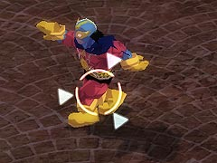
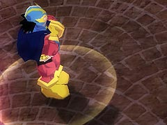
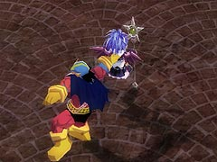
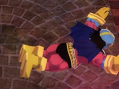
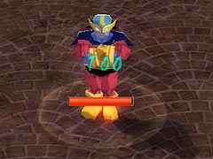
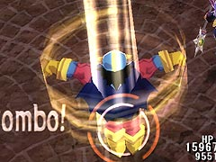

目次 > ゲームについて > 日本Falcom 攻略 > ZWEI II > G-コロッセオ > 最強の男杯
らんの眼
ZWEI II (ツヴァイ 2、ZWEI II Plus)
| 概要 | 情報 | 攻略チャート |
| フード交換 | ペットについて | ボス戦 |
| 敵キャラ一覧 | ハンターランク | G-コロッセオ |
| アイテム一覧 | ガジェット一覧 | トレジャー一覧 |
| ダンジョン一覧 | クリアデータ特典 | Plusの追加要素 |
| ZWEI II攻略へ | 目次へ戻る |
| 超人ギャランドゥ 前半 |
| 超人ギャランドゥは、殆どの場合無敵状態となっています。しかし、攻撃後やエクササイズ終了後などほんのわずかな時間だけ無敵ではなくなるので、その時に攻撃を当てなければなりません。 そのため、無敵時間のことなど考えずに、アルウェンの「焦熱の魔法」や「常闇の魔法」を連発するのが手っ取り早いです。一方、ラグナは・・・。   前半の攻撃は2 種類あり、一つが近寄ってきて投げる攻撃です。これは発動前に超人ギャランドゥの周囲が光るので分かります。 また、怪人ギャランドゥが近寄ってきたらジャンプで捕まれないようにするのですが、タイミングもさほどシビアではありません。  ちなみに投げるモーションは、その場にたたき落とすものと、遠くまで投げるものがあるようです。  そして、もう一つの攻撃が「Gアタック」です。超人ギャランドゥと主人公との距離がかなり離れている場合に使ってきます。「食らえー、Gアターック!!」と叫びながらボディプレスをしてくるのですが、簡単によけられます。  また、攻撃の合間に怪人ギャランドゥがエクササイズをし、体力を回復する場合がありますが、防ぐことはできないので、無視して踊らせておきましょう。 |
| 怪人ギャランドゥ 後半 |
| 体力が減ると、攻撃方法が一つ追加されます。  それがこの「Gハリケーン」なのですが、攻撃範囲もあまり広くないので必要以上に恐れる必要はありません。 |
| 概要 | 情報 | 攻略チャート |
| フード交換 | ペットについて | ボス戦 |
| 敵キャラ一覧 | ハンターランク | G-コロッセオ |
| アイテム一覧 | ガジェット一覧 | トレジャー一覧 |
| ダンジョン一覧 | クリアデータ特典 | Plusの追加要素 |
| ページの上部へ | ZWEI II 攻略へ | 目次へ戻る |